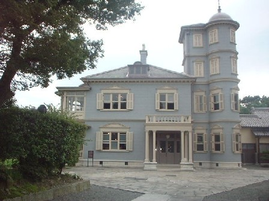
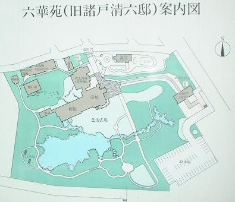

（８７）六華苑
所用で桑名へ行くことになった。家人に話すと、「桑名の六華苑に前から行きたいと思っていた。ちょうどいいから回り道してでも一緒に行かないか」という。「おお、六華苑か。わざわざ行くというと大変だが、それはいいアイデア」というので、所用のついでに足を運ぶことにした。
六華苑というのは、２代目諸戸清六（もろどせいろく）が、大正２年に建てた個人の住宅。パンフレットによれば、２５才のとき、英国人建築家、ジョサイア・コンドルに依頼して造ったそうな。
※設計者、ジョサイア・コンドルは鹿鳴館も設計した建築家。イギリスの建築学校を出て、若くして日本にきた。日本人女性と結婚して、７０才くらいで日本で亡くなった。鹿鳴館や諸戸家だけでなく、古川男爵邸など多くの有名建物を設計している。日本のある大学で（大学名、忘れた）建築を教えた。彼の教え子には、東京駅を設計した人、丸の内ビルを設計した人など、当時の日本建築界の重鎮となった人が何人もいる。
なんでこんなに金持ちだったかといえば、お父さんがすごかった。初代・諸戸清六（もろどせいろく）は明治時代に米相場で成功し、そのお金で不動産を買った。明治２１年には、日本一の不動産所有者になり、そのころには東京にも３０万坪の土地も持っていたという。
行ってみると、たしかに素晴らしい。向かって右側に４階建ての塔があるが、この窓ガラスが丸い塔にそって湾曲している。当時の日本には湾曲ガラスを造る技術が無く、ヨーロッパから輸入したそうだ。

正面は、こういう洋館だが、背後には普段の住まいである日本家屋が建っている。もうこの日本家屋がまたすごかった。まるでむかしのお殿様の住まいみたいだった。
建物は住まいとして使用しなくなってから、しばらく事務所などに使用していたが、平成５年、桑名市に寄贈された。それを桑名市が修復し、六華苑として一般公開している。６千坪をポンと寄贈するのだから、ほんとにすごい。
むかしの大地主は、敗戦後の農地解放で土地をほとんど失ったが、諸戸家の不動産は山林も多かった。山林は農地解放の対象にならなかったので、いまでもすごい資産家。でなけりゃ６千坪をポンなんて、なかなか出来ないよね。。。。

庭園もあるが、これがまた広い。小舟を浮かべることが出来るくらいの池がある（いまは全体で６千坪ぐらいらしい）。右上部分のロータリーみたいなところは今は温室になっているが、昔はテニスコートだったそうだ。また案内図に方位を示す矢印があるが、この部分に一級河川である揖斐川が流れている。いや、ま、とにかく広くてすごかった。
前へ 次へ 目次へ